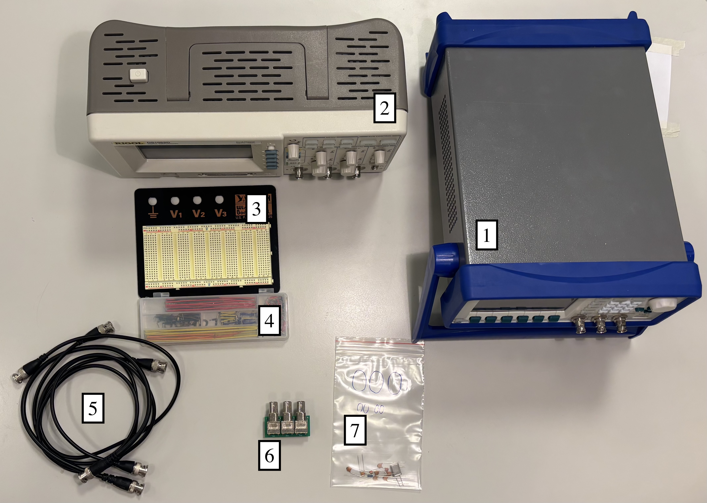
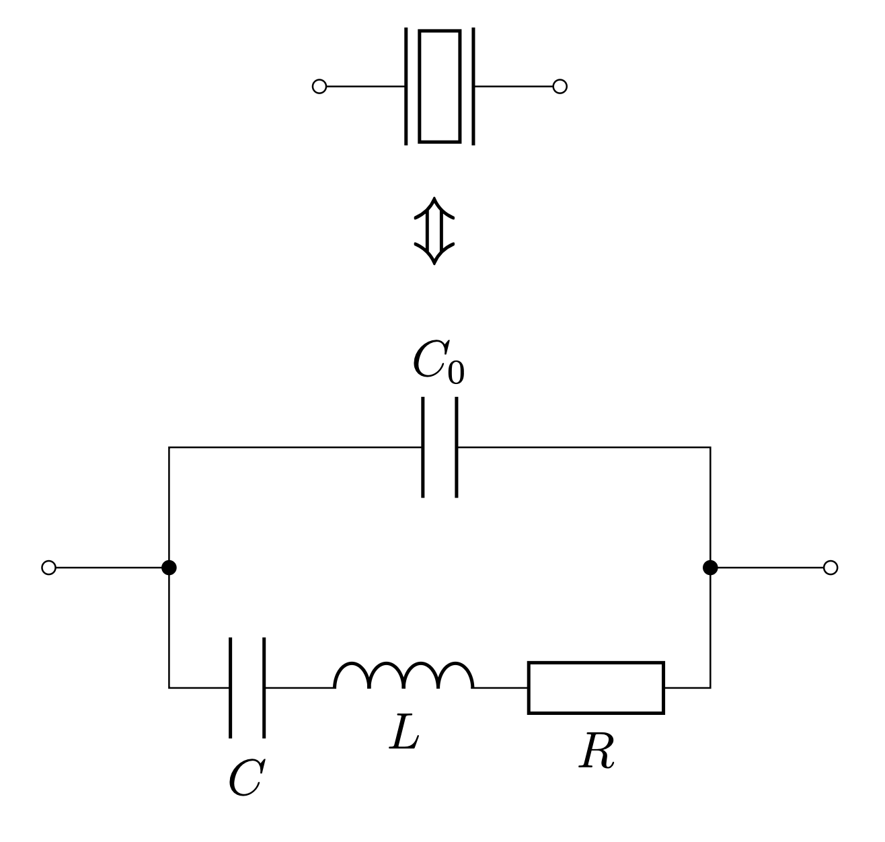
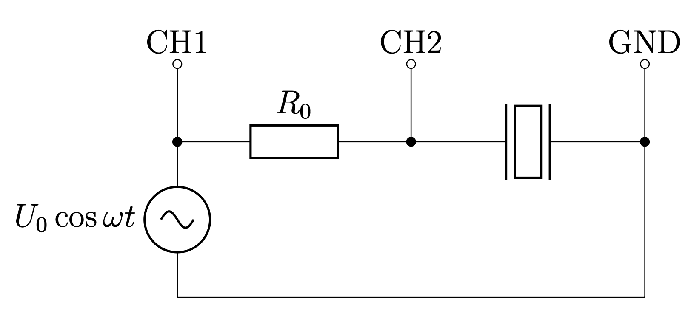

X26 (2026) — English translation
Error estimation is not required in this task.
Equipment: AC generator Oscilloscope Breadboard Set of jumpers 3 wires BNC-BNC Adapter “BNC-board” Package with electronic components, which includes: 9 capacitors; quartz resonator, the resonant frequency of which is about $2~МГц$; resistor $R_0 = 5.1~кОм$

Capacitor marking Capacity, pF $\underline{6}$ 6.0 $\underline{10}$ 10 $\underline{15}$ 15 27 27 $\underline{33}$ 33 $\underline{47}$ 47 $\underline{56}J$ 56 $\underline{68}$ 68 82 82
A quartz resonator is an electronic component that uses the piezoelectric properties of quartz to generate electrical oscillations with high precision and stability. Based on its behavior in electrical circuits, a quartz resonator can, to a first approximation, be represented in the form of an equivalent electrical circuit shown in the figure. In this problem we will study a quartz resonator as an oscillatory circuit and find its parameters. It is known that the resonant frequency of a quartz resonator is about $2~МГц$.
Note. Do not set the double voltage amplitude on the generator $2U_0 > 500~мВ$. Otherwise, the operation of the quartz resonator in the same mode as at lower amplitudes is not guaranteed.

For measurements, use the following scheme:

We will call the frequency $f_{рез}$ the resonance frequency, and the frequency $f_{анти}$ the antiresonance frequency.
The impedance of a quartz resonator can be written as: \[ Z(\omega) = \dfrac{\omega_s^2 - \omega^2 + i\omega \alpha}{i\omega C_0 (\omega_p^2 - \omega^2 + i\omega \alpha)},\]where $\omega$ is the cyclic frequency of the signal; $\omega_s, \omega_p, \alpha$ - do not depend on $\omega$.
Further in this problem we will assume that the following approximations are valid near resonance: \[ Z(\omega) \approx \dfrac{\omega_s^2 - \omega^2 + i\omega_p \alpha}{i\omega_p C_0 (\omega_p^2 - \omega^2 + i\omega_p \alpha)};\quad \alpha \ll \omega_p - \omega_s.\]
Further, we can consider it known that within the framework of the described approximations, the following equalities hold: \[\varphi(f_{anti})=\varphi(f_{res}) =0,\]where $\varphi(f)$ is the dependence of the phase difference between the signals from channels 2 and 1 on frequency. When connecting capacitor $C_{\text{ext}}$ parallel to the resonator, the resonance frequency $f_{рез}$ will change.
Source: https://pho.rs/p/4788